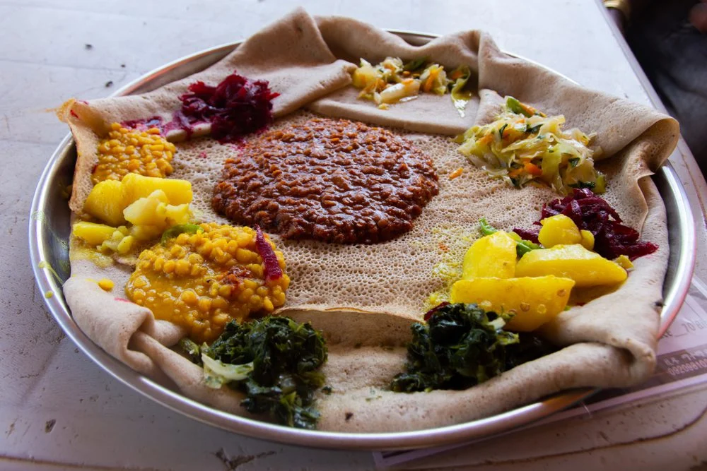

Yetsom Beyaynetu
Ethiopian Combination Platter
Description
Yetsom means fasting and beyaynetu means combination platter. Yetsom Beyaynetu is an Ethiopian combination platter composed of vegan curries and veggies. We love the variety this type of dinner offers.
It is an Ethiopian dishes typically consist of injera, a spongy sourdough flatbread made of fermented teff flour, spread flat over a communal pan (a large platter) and topped with several kinds of spicy and non spicy wats (stews) and vegetables. In principle, the combination platter is very similar in composition, but not flavor, to an Indian thali.
Ingredients
- 1 oz fresh ginger
- 1 jalapeño chile
- 2 medium red onions
- 2 (12 oz) collard greens
- 12 oz plum tomatoes
- 6 oz tomato paste
- 2 (¼ oz) berbere spice blend
- 6 oz red lentils
- 4 Mediterranean pitas
Steps to make Yetsom Beyaynetu
Prep aromatics
- Finely chop onion and jalapeño.
- Peel and finely chop 1 teaspoon ginger and 1½ tablespoons garlic.
- In a medium bowl, combine 2 tablespoons of the onions, 3 teaspoons of the jalapeños, and 2 teaspoons of the garlic
Cook aromatics
- Heat ¼ cup oil in a medium saucepan over medium.
- Add chopped ginger, remaining onion, garlic, and jalapeno, and a pinch of salt.
- Reduce heat to medium-low and cook, stirring occasionally, until vegetables are very soft and translucent with no browning, 7 - 10 minutes.
Prep collards & tomatoes
- Trim ends from collard greens, remove and discard center stem
- Then stack leaves and cut crosswise into ½-inch wide ribbons
- Cut tomatoes into ½-inch pieces and reserve ¼ cup tomatoes for later
- Transfer remaining tomatoes to bowl with reserved onions, jalapeños, and garlic.
- Stir in 1 tablespoon each of vinegar and oil; season to taste.
- Set tomato salad aside until ready to serve.
Cook lentils
- Once aromatics are soft, transfer half to 2nd medium saucepan.
- To 1 saucepan, stir in 2 tablespoons tomato paste and 1 tablespoon berbere
- cook over medium heat, stirring, until slightly darkened and aromatic, 2 - 3 minutes.
- Add lentils, 3½ cups water, and 2 teaspoons salt.
- Bring to a boil, then simmer on medium until lentils are tender and stew is thickened, 15 - 18 minutes.
Cook collard greens
- To the other medium saucepan, add collard greens, 1 cup water, reserved ¼ cup tomatoes, 2 teaspoons salt, and ½ teaspoon berbere.
- Bring to a boil and simmer over medium-low heat, stirring occasionally, until collard greens are dark green, tender, and liquid is reduced by ⅔, 12 - 15 minutes.
- Preheat broiler with a rack in top the position.
Warm pita & serve
- Lightly brush pitas all over with oil, broil directly on top oven rack until warm and pliable, 1 - 2 minutes per side.
- Cut pitas into wedges, if desired.
- Stir 1 teaspoon vinegar each into lentils and collard greens, season to taste with salt and pepper.
- Serve lentils, collard greens, and tomato salad with warm pitas on the side.
- Enjoy!